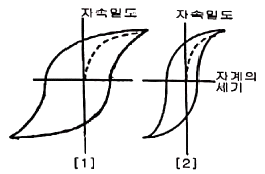
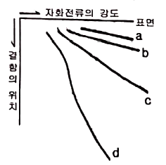
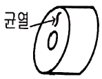
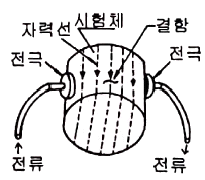

자기비파괴검사기사 (2021-08-14 기출문제)
1과목: 비파괴검사 개론
1. 다음 중 비파괴시험적인 요소를 포함하고 있는 것은?
- 경도시험
- 굽힘시험
- 충격시험
- 인장시험
(정답률: 76%)

2. 방사선투과검사의 신뢰도를 높이기 위한 방법으로 관계가 적은 것은?
- 교육 훈련을 통한 검사자의 기량 향상
- 검사에 적합한 규격의 선정과 적용
- 방사선 안전관리를 통한 효율적인 작업관리
- 시험체에 적합한 검사방법의 선정
(정답률: 72%)
3. 오스테나이트계 스테인리스강 용접부의 주상정 내에서의 초음파특성에 대한 설명 중 옳은 것은?
- 주상정 성장방향과 종파의 진행방향에 따라 종파 음속이 변한다.
- 주상성 성장방향과 종파의 진행방향에 관계없이 항상 횡파음속은 일정하다.
- 주상정 성장방향에 대하 45°로 입사하는 종파의 음속이 가장 느리다.
- 주상정 성장방향에 대해 45°로 입사하는 종파의 감쇠가 가장 크다.
(정답률: 67%)
4. 다음은 자분탐상검사의 특징을 설명한 것으로 틀린 것은?
- 결함으로부터의 누설자속은 없으므로 자분을 균일하게 적용하면 결함부분에 자분이 흡착된다.
- 자속은 가능한 한 결함면에 수직이 되어야 한다.
- 균열과 같은 결함은 검출할 수 있다.
- 결함이 표면으로부터 깊은 곳에 있으면 자속이 누설되기 어려워 결함을 발견할 수 없다.
(정답률: 70%)
5. 와류탐상검사에서 전류 흐름에 대한 코일의 총 저항을 무엇이라 하는가?
- 인덕턴스
- 리액턴스
- 임피던스
- 리프트오프
(정답률: 77%)
6. 은백색을 띠며 비중이 1.74로 실용금속 중 가장 가볍고 HCP 격자구조를 가지고 있는 금속은?
- Cd
- Cu
- Mg
- Zn
(정답률: 74%)
7. 3원계 금속 상태도에서 3상이 공존할 때의 자유도는 얼마인가? (단, 압력은 일정하다.)
- 0
- 1
- 2
- 3
(정답률: 66%)
8. 금속재료 경도시험 방법 중 누르개를 이용한 방법이 아닌 것은?
- 쇼어 경도시험
- 비커스 경도시험
- 로크웰 경도시험
- 브리넬 경도시험
(정답률: 63%)
9. 엘렉트론(Elektron) 합금의 주성분은?
- Au
- Mg
- Se
- Sn
(정답률: 55%)
10. 다음 중 밀도가 가장 큰 것은?
- Tap density
- Apparent density
- Green density
- Sintered density
(정답률: 40%)
11. Cd, Zn과 같은 육방정계 금속을 슬립면에 수직으로 압축할 때 나타나는 변형부분은?
- Shear stress
- Kink band
- Twin strain
- Mixed dislocation
(정답률: 47%)
12. Pb 베이스에 Sb와 Sn이 첨가된 합금의 주 용도는?
- 인쇄용
- 공구용
- 건설구조용
- 화학기기류용
(정답률: 50%)
13. 구상흑연주철의 특징이 아닌 것은?
- 흑연의 모양이 구성이다.
- 회주철에 비하여 고탄소, 고규소의 주철이다.
- 일반적으로 유리 시멘타이트가 없는 상태에서 사용된다.
- 기지조직이 시멘타이트로 경도와 내마모성이 아주 우수하다.
(정답률: 31%)
14. 다음 경도시험 중 대면각이 136°인 다이아몬드 사각추 누르개를 사용하는 것은?
- 누프 경도시험
- 브리넬 경도시험
- 비커스 경도시험
- 로크웰 경도시험
(정답률: 50%)
15. invar와 같이 36% Ni를 함유하는 합금의 특징은?
- 열팽창계수가 작다.
- 열팽창계수가 크다.
- 내식성이 나쁘다.
- 인성과 취성이 크다.
(정답률: 54%)
16. 피복 아크 용접 작업에서 아크 발생을 4분, 아크 정지를 6분 하였다면 용접기 사용률은?
- 20%
- 30%
- 40%
- 60%
(정답률: 68%)
17. 피복 배합제의 성분 중 아크 안정제에 속하는 것은?
- 산화티탄
- 페로티탄
- 마그네슘
- 알루미나
(정답률: 60%)
18. 용접 변형 방지법 중 냉각법에 속하지 않는 것은?
- 살수법
- 교호법
- 석면포 사용법
- 수냉 동판 사용법
(정답률: 43%)
19. 일반적인 서브머지드 아크 용접의 특징으로 옳은 것은?
- 용접부 개선 홈 가공을 하지 않아도 된다.
- 용접 진행 상태를 육안으로 확인할 수 있다.
- 용입이 깊고, 용융속도 및 용착속도가 빠르다.
- 용접선이 짧거나 복잡한 경우 수동에 비하여 능률적이다.
(정답률: 57%)
20. 용접 결함의 분류 중에서 구조상 결함에 해당하는 것은?
- 변형
- 기공
- 인장 강도의 부족
- 용접부 형상의 부적당
(정답률: 45%)
2과목: 자기탐상검사 원리
21. 도체의 단위 체적당 포획되어 있는 자유전자의 수를 n[개/m3], 전자의 전하를 e[C], 기전력에 의한 자유전자의 평균운동 속도성분을 V[m/sec]라 하면 도체 단면에서 전류 밀도[i]는?
- i = eV/n
- i = ne/V
- i = neV
- i = 1/neV
(정답률: 54%)
22. 봉형 비자성체에 직류를 흘렸을 때 자계의 분포에 대한 설명으로 틀린 것은?
- 봉의 중심에서 자계의 세기는 0(영)이 된다.
- 전류를 2배로 증가하면 자계의 세기도 2배가 된다.
- 외부 표면에서의 자계의 세기는 봉의 반지름이 증가할수록 증가한다.
- 봉재 외부의 자계의 세기는 봉의 중심으로부터의 거리에 따라 감소한다.
(정답률: 41%)
23. 습식자분에서 자분함량이 많을 경우에 나타나는 현상은?
- 건전 부위에 자분모양이 나타나서 결함부와의 구분이 어렵게 된다.
- 결함부에 너무 많은 자분이 흡착되어 원형지시가 선형지시로 오판될 수 있다.
- 누설자속의 양이 자분의 농도로 인하여 약화된다.
- 누설자속의 양이 자분의 농도로 인하여 강화된다.
(정답률: 56%)
24. 고압 수은 자외선 조사등은 시험 또는 자외선 강도측정에 사용하기전 최소한 몇 분 동안 예열하여야 전기능을 발휘하는가?
- 10초
- 5분
- 10분
- 15분
(정답률: 60%)
25. 강자성체가 자력을 제거한 후에도 재료 내에 자기를 유지하려는 재료의 특성을 무엇이라 하는가?
- 투자성
- 잔류자기
- 자장
- 보자성
(정답률: 66%)
26. 습식형광 자분탐상시험이 비형광 자분탐상에 비하여 장점인 것은?
- 검사의 정확성을 높일 수 있다.
- 다수의 작업장에서 형광등이 표준조명이므로 활용상 편리하다.
- 시험품이 대형일 때유리하다.
- 시험품이 비자성체일 때 검사속도를 빠르게 한다.
(정답률: 60%)
27. 코일의 직경 1m, 전류의 100암페어[A], 코일 감은 수를 10회[T]로 할 때 코일중심의 자장의 세기는 몇 [AT/m]가 되는가?
- 500
- 1000
- 1500
- 2000
(정답률: 72%)
28. 시험체를 각각 측정한 자기이력곡선에 대한 그림[1]과 그림[2]에 관한 설명으로 옳은 것은?

- 그림[1]과 [2]는 투자율의 차이를 보인다.
- 그림[1]의 시험체는 건식자분으로만 검사해야 한다.
- 그림[2]의 시험체는 건식자분으로만 검사해야 한다.
- 그림[2]는 잔류법으로만 검사해야 한다.
(정답률: 65%)
29. 도체의 표층부 결함이나 부식으로 얇아진 판 두께의 변화를 검지 할 수 있는 검사방법은?
- 누설 시험법(Leakage Test)
- 자분탐상 검사(Magnetic Particle Test)
- 자기에나멜검사(Porcelain Enamel Test)
- 전위차 시험법(Electrical Potential Drop Test)
(정답률: 57%)
30. 시험체 외부의 도체에 통전함에 따라 시험체에 자속을 발생시키는 방식이 아닌 것은?
- 전류관통법
- 근접도체법
- 자속관통법
- 코일법
(정답률: 45%)
31. 자화방법 선택 시 고려 사항으로 틀린 것은?
- 예측되는 결함 방향에 대하여 자계의 방향이 직각이 되는 자화방법을 선택한다.
- 자계의 방향을 시험면에 가급적 평형이 되도록 한다.
- 잔류법에 의한 시험의 경우는 교류자화를 하여야 한다.
- 대형시험체는 분할하여 국부적으로 자화시킬 수 있는 자화방법을 선택한다.
(정답률: 40%)
32. 습식용 자분을 사용하는 경우 검사액의 농도에 대한 설명으로 잘못된 것은?
- 검사액 농도는 검사액의 단위 체적 속에 포함된 자분의 질량으로 나타낸다.
- 검사액 농도의 적정값은 형광과 비형광 자분에 따라 다르나 형광 자분이 더 낮다.
- 검사액 농도는 자분의 입도가 작을수록 엷게 해야 한다.
- 검사액 농도는 침전관을 사용하여 측정해야 아주 정확하다.
(정답률: 35%)
33. 전류에 의한 자계의 방향을 결정해 주는 것은?
- 플레밍의 오른손 법칙
- 플레밍의 왼손 법칙
- 오른 나사의 법칙
- 렌쯔의 법칙
(정답률: 50%)
34. 외부의 자화력이 제거된 후에도 부품에는 자극의 배열이 질서 정연하게 나타나는 경우가 있다. 이때 이들 자극의 배열을 원상태로 환원시켜 주는데 소요되는 자력을 무엇이라 하는가?
- 공급되는 DC전류
- 항자력
- 잔류자기
- 투자율
(정답률: 49%)
35. 자분탐상시험의 연속법에서의 일반적인 최저 통전시간은?
- 1/4초
- 0.2초
- 3초
- 10분
(정답률: 59%)
36. 표면이 열린 규열을 검출할 때 깊이가 깊을수록 나타나는 자분지시가 강하게 나타나는 이유는?
- 자장의 일그러짐이 깊이에 비례하여 심화되기 때문에
- 자화전류의 세기가 균열에서 자동으로 높아지기 때문에
- 균열의 깊이가 깊으면 자화가 약하기 때문에
- 자장의 일그러짐이 깊이에 반비례하여 약해지기 때문에
(정답률: 60%)
37. 막대자석을 굽혀 완전한 고리모양(링모양)으로 만들어 양끝을 녹여 붙이면 자극의 변화는?
- 고리의 안쪽 면이 N극, 바깥쪽 면이 S극이 된다.
- 고리의 안쪽 면이 S극, 바깥쪽 면이 N극이 된다.
- 고리의 앞쪽 면이 N극, 뒷쪽 면이 S극이 된다.
- 자극이 사라진다.
(정답률: 45%)
38. 다음 중 코일법으로 자화하는 경우 자계강도에 영향을 주지 않는 인자는?
- 코일을 감은 수
- 코일에 흐르는 전류값
- 코일의 지름
- 코일의 밀도
(정답률: 50%)
39. 다음 중 잔류법에 관한 사항으로 틀린 것은?
- 자화전류를 끊고 나서 자분을 적용하는 방법이다.
- 저탄소강이나 전자연철 등에 적용한다.
- 일반적으로 연속법에 비하여 결함 검출 능력이 떨어진다.
- 나사부분 등 복잡한 형상 부분에 적용하면 의사모양 지시의 발생이 적다.
(정답률: 40%)
40. 강자성의 물질을 자화할 때 그 물질에 탄성적 변형이 생기는 현상은?
- Joule현상
- 로렌츠현상
- 자왜현상
- 자기유도현상
(정답률: 47%)
3과목: 자기탐상검사 시험
41. 투자율이 다른 재질의 시험체를 대상으로 자분탐상검사를 수행하였을 때, 굵고 희미한 지시가 검출되었다. 예상되는 지시의 형태는 무엇인가?
- 재질 경계 지시
- 전극 지시
- 표면거칠기 지시
- 오염 지시
(정답률: 63%)
42. 습식자분탐상용 검사액 자분분산 농도의 최적값에 영향을 미치는 인자가 아닌 것은?
- 형광
- 비형광
- 탈자성
- 자분의 입도
(정답률: 60%)
43. 다음 죽 직접 자화법의 국부자화법에 대항되는 것은?
- 코일법
- 축통전법
- 프로드법
- 중심도체법
(정답률: 49%)
44. 프로드형 자분탐상기의 케이블이나 도선으로 시험체의 둘레를 감았을 때 시험체에 유도되는 자계의 형태는?
- 원형자계
- 전자자계
- 선형자계
- 방사선형자계
(정답률: 38%)
45. 코일법으로 시험체를 자화시켰을 떄 코일의 양쪽의 시험체 유효 범위로 가장 옳은 것은?
- 6인치 이하
- 10인치 이상
- 12인치 이상
- 15인치 이상
(정답률: 56%)
46. 다음 그림에서 직류건식법은? (단, 적용된 검사법은 직류습식, 직류건식, 교류습식, 교류건시법 이다.)

- a
- b
- c
- d
(정답률: 47%)
47. 자분탐상검사 시 의사모양이 발생하는 위치가 아닌 것은?
- 서로 다른 금속이 결합된 곳
- 자화된 시험체에 다른 강자성체가 접촉한 곳
- 표면의 조잡한 절단면
- 표면의 피로균열이 있는 곳
(정답률: 52%)
48. 자화된 재료가 큐리점에 도달하면 어떤 현상이 일어나는가?
- 자성을 잃는다.
- 더 강하게 자화된다.
- 자화강도에는 변화가 없다.
- 탈자된 후 다시 본래대로 자화된다.
(정답률: 50%)
49. 자분탐상검사에서 의사지시의 발생요인으로 고려할 수 있는 가장 큰 요인은?
- Pin hole
- 용접불량
- 잔류응려
- 불연속부
(정답률: 44%)
50. 자분탐상검사에 사용되는 블랙라이트라고 불리는 자외선 조사장치에서 방사되는 자외선의 파장 범위에 해당하는 것은?
- 200nm
- 360nm
- 500nm
- 560nm
(정답률: 67%)
51. 자분모양 중 잔류법을 적용한 시험품이 서로 접촉한 경우 나타나는 지시는?
- 자기펜 지시
- 단면 급변지시
- 자극지시
- 전극지시
(정답률: 52%)
52. 시험품에 그림과 같은 불연속을 가장 잘 검출할 수 있는 자화방법은?

- 코일속에 시험품을 놓는다.
- 자속 관통법을 사용하여 검사한다.
- 도체로 된 시험품에 직접 전류를 통한다.
- 원통내부에 중심도체를 끼우고 시험체를 자화하며 검사한다.
(정답률: 58%)
53. 직류를 사용하여 결함을 검출한 후, 그 결함이 표면결함인지 표면하 결함인지를 확인하는 방법으로 옳은 것은?
- 탈자 후 재검사 한다.
- Surge법으로 재검사 한다.
- 교류로 재검사한다.
- 높은 전류로 재검사 한다.
(정답률: 49%)
54. 다음 중 외경 40mm읜 워농형 시험체를 자분탐상시험 할 때 축방향의 결함을 검출하기에 가장 적합한 자화방법은?
- 프로드법
- 코일법
- 직각통전법
- 전류관통법
(정답률: 25%)
55. 자분탐상검사에 쓰이는 자외선등과 관련된 설명이 잘못된 것은?
- 자외선등이 검사자에게 직접적인 영향을 주지는 않는다.
- 300nm이하의 짧은 파장은 인체의 피부에 화상을 입힐 수 있다.
- 금이 간 필터는 가시광선이 누출되지만 사용에 이상은 없다
- 고압 수은등을 사용할 수 있다.
(정답률: 47%)
56. 자분탐상에서 잔류법으로 검사하기에 가장 알맞는 재료는?
- 고 보자성, 저 투자율
- 고 보자성, 고 투자율
- 저 보자성, 저 투자율
- 저 보자성, 고 투자율
(정답률: 45%)
57. 자분탐상검사에서 표면 바로 밑에 존재하는 결함을 검출할 수 있는데, 교류 자화의 침투 깊이에 영향을 주지 않는 ㅇ니자는?
- 전자
- 주파수
- 투자율
- 전도율
(정답률: 35%)
58. 다음 중 누설자속의 발생에 영향을 주는 요인으로 가장 거리가 먼 것은?
- 자계의 세기
- 자계의 방향
- 결함의 위치
- 자분의 종류
(정답률: 45%)
59. 습식연속법의 자분탐상검사에서 자화전류를 언제 정지해야 결함을 양호하게 검출할 수 있는가?
- 습식자분액 적용을 시작하기 전
- 습식자분액의 적용이 끝난 즉시
- 습식자분액 적용 후 검사액의 흐름이 정지된 다음
- 습식자분액 적용 휴 검사액의 흐름이 정지하기 전
(정답률: 50%)
60. 큰 구조물 검사에 가장 효과적인 자분탐상시험법은?
- 전류관통법
- 축관통법
- 프로드법
- 직접 자화법
(정답률: 58%)
4과목: 자기탐상검사 규격
61. 강자성 재료의 자분탐상검사 방법 및 자분 모양의 분류(KS D 0213)에서 C1 표준 시험편과 C2 표준 시험편의 차이는?
- 인공흠집의 깊이
- 인공흡집의 폭
- 시험편의 두께
- 시험편 재질의 열처리 유무
(정답률: 42%)
62. 강자성 재료의 자분탐상검사 방법 및 자분모양의 분류(KS D 0123)에 따라 저장탱크나 구형태크의 대형구조물의 용접부를 내압시험 종류 후에 자분탐상시험 할 때 원칙적으로 어느 방법을 선택하여야 하는가?
- 극간법
- 코일법
- 프로드법
- 자속관통법
(정답률: 58%)
63. 강자성 재료의 자분탐상검사 방법 및 자분모양의 분류(KS D 0213)에서 큰 전류가 흐르는 자화 케이블 등이 시험면에 접촉하면 그 부위가 국부적으로 자화되기 때문에 생기는 굵고 흐른 자분모양을 무엇이라 하는가?
- 전류지시
- 단면급변지시
- 자극지시
- 자기펜지시
(정답률: 49%)
64. 보일러 및 압력용기에 대한 자분탐상검사(ASME Sec.V Art.7)에 따라 외경 2.5인치, 길이 12.5인치인 시험체를 코일법으로 탐상할 때 요기되는 암페어턴(AㆍT)수는?
- 1250
- 2500
- 5000
- 6250
(정답률: 45%)
65. 강자성 재료의 자분탐상검사 방법 및 자분모양의 분류(KS D 0213)에서 시험장치가 시험체에 대하여 수행하여 하는 4조작에 해당되지 않는 것은?
- 전처리
- 자화
- 자분의 적용
- 탈자
(정답률: 48%)
66. 보일러 및 압력용기에 대한 자분탐상검사(ASME Sec.V Art.7)에서 두께 200mm 초과하는 강자성체를 직류 또는 정리된 전류로 프로드를 사용하여 시험하고자 할 때 프로드 간격 1인치당 걸어주어야 하는 암페어[A] 범위는?
- 60 ~ 80A
- 80 ~ 100A
- 100~125A
- 125~150A
(정답률: 54%)
67. 보일러 및 압력용기에 대한 자분탐상검사(ASME Sec.V Art.7)에서 형광자분탐상시험을 하기 위해 절차에 따라 자외선조사장치의 자외선 강도를 확인한 결과 900 μW/cm2로 나타났다. 이를 in2 단위로 환산한 값은?
- 6450 μW/in2
- 5806 μW/in2
- 2540 μW/in2
- 2286 μW/in2
(정답률: 41%)
68. 강자성 재료의 자분탐상검사 방법 및 자분모양의 분류(KS D 0213)에서 연속법으로 사용할 수 없는 전류는?
- 교류
- 맥류
- 직류
- 충격전류
(정답률: 46%)
69. 강자성 재료의 자분탐상검사 방법 및 자분 모양의 분류(KS D 0213)이 자분의 종류 및 특성애 대한 기록사항이 아닌 것은?
- 제조자명
- 자화 전류
- 입도
- 형번
(정답률: 35%)
70. 강자성 재료의 자분탐상검사 방법 및 자분모양의 분류(KS D 0213)에 의거 그림의 검사법에 해당되는 것은?

- 축통전법
- 직각 통전법
- 프로드법
- 전류 관통법
(정답률: 54%)
71. 보일러 및 압력용기에 대한 자분탐상검사의 합격기준(ASME Sec. VIII Div1 App.6)에 따라 합격으로 판정할 수 있는 것은?
- 폭 0.5mm, 길이 2.0mm인 결함지시
- 폭 1.0mm, 길이 3.5mm인 결함지시
- 폭 2.0mm, 길이 4.0mm인 결함지시
- 폭 3.0mm, 길이 6.0mm인 결함지시
(정답률: 40%)
72. 보일러 및 압력용기에 대한 자분탐상검사(ASME Sec.V Art.7)에서 미리 감겨져있는 고정코일로 선형자화 기법을 적용할 때, 검사체의 단면적이 코일의 열린(coil opening)면적 보다 1/10 이상 작은 경우 검사하는 동안 시허체를 놓아야 하는 위치는?
- 코일 내면 근처
- 코일 외면 그처
- 코일 중앙
- 코일 단면
(정답률: 47%)
73. 보일러 및 압력용기에 대한 표준자분탐상검사(ASME Sec.V Art.7 SE-709)에서 자외선 조사장치로 수은등을 사용하는 경우 최소 예열 시간은?
- 1분
- 2분
- 5분
- 10분
(정답률: 50%)
74. 배관 용접 이음부에 대한 비파괴검사(KS B 0888)에 따라 지그 부착자국에 대한 자분탐상시험을 할 떄, 지그 부착자국의 주변에서 그 외부로 최소 얼마 이상을 더한 길이를 시험 범위로 잡아야 하는가
- 5mm
- 10mm
- 15mm
- 20mm
(정답률: 26%)
75. 강자성 재료의 자분탐상검사 방법 및 자분모양의 분류(KS D 0213)에 의한 A형 표준시험편 중에서 가장 높은 유효자계의 강도에서 자분모양이 나타내는 것은?
- A1 - 7/50
- A1 - 15/50
- A2 - 7/50
- A2 - 15/50
(정답률: 43%)
76. 강자성 재료의 자분탐상검사 방법 및 자분의 모양의 분류(KS D 0213)에 대한 자분모양의 설명으로 올바른 것은?
- 독립된 자분모양에서 그 길이가 나비의 2배 이상인 것을 선상의 자분모양이라 한다.
- 독립한 자분모양에서 그 길이가 나비의 2배 이상인 것을 원형상의 자분모양이라고 한다.
- 균열로 식별된 자분모양은 선상의 자분모양이라 한다.
- 자분모양이 일정한 면적에 여러개의 자분모양이 존재 하는 것을 분산한 자분모양이라 한다.
(정답률: 59%)
77. 보일러 및 압력용기에 대한 표준자분탐상검사(ASME Sec.V Art.25 SE-709)에서 용접부의 오목한 부분이나 스케일에 의해 자분이 모여서 나타난 자분모양은?
- 불연속(discontinuities)
- 의사지시(false indications)
- 관련지시(relevant indications)
- 무관련지시(nonrelevant indications)
(정답률: 52%)
78. 보일러 및 압력용기에 대한 표준자분탐상검사(ASME Sec.V Art.25 SE-709)에 따라 자분탐상시험 시 시험 부품 전처리에 대한 설명으로 옳은 것은?
- 직접자화시를 위해 전기적 접촉이 이루어지는 검사부품의 코팅은 제거할 필요가 없다.
- 검사전 검사부품의 잔류자장은 결함 검출에 영향을 주지 않는다.
- 전도체 코팅은 불연속을 가질 수는 없다.
- 0.02 ~ 0.⑤mm 두께 정도의 페인트와 같은 비전도체 코팅은 지시의 형성에 방해가 되지 않는다.
(정답률: 47%)
79. 강자성 재료의 자분탐상검사 방법 및 자분 모양의 분류(KS D 0213)에서 통전시간의 설정으로 맞는 것은?
- 연속법은 통전 중 관찰이 완료된 시간으로 설정한다.
- 잔류법은 2초 이내로 한다.
- 충격전류의 경우 2회이상 통전을 반복한다.
- 충격전류의 경우 1/120초 이상으로 한다.
(정답률: 40%)
80. 보일러 및 압력용기에 대한 표준자분탐상검사(ASME Sec.V Art.25 SE-709)에서 조도계의 점검 주기는?
- 1주
- 4주
- 3개월
- 6개월
(정답률: 63%)